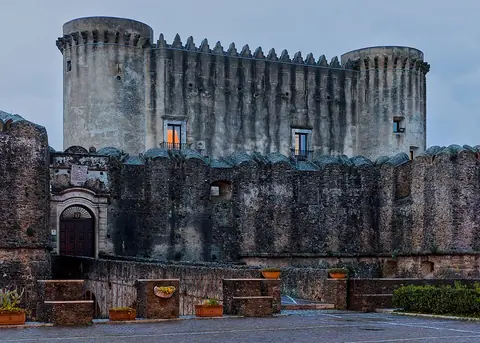
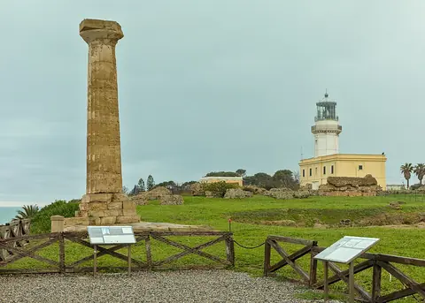
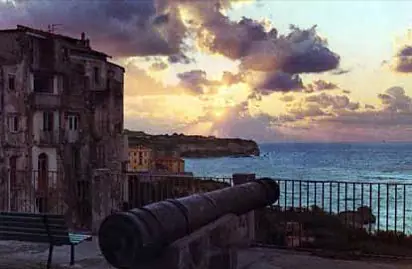
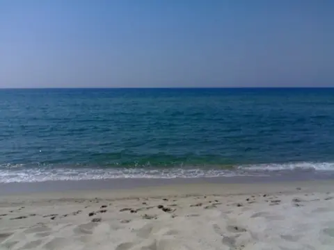
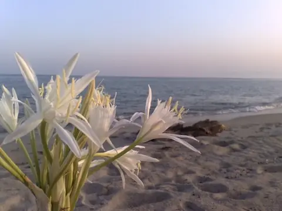

Capo Rizzuto e Le Castella
L'area marina protetta di Capo Rizzuto, un mondo di anfratti con piante, spugne e pesci del Mediterraneo. Poi il Castello Aragonese, costruito su un isolotto: uno degli edifici più scenografici della regione.
Home / Dintorni
I dintorni
Pochi metri ci separano dal mar Ionio color turchese; in una ventina di minuti si sale sull'altopiano della Sila. In mezzo, i paesi della fascia presilana e gli scavi che raccontano la storia della Magna Grecia.
Itinerari
Su richiesta organizziamo escursioni e visite guidate.
L'area marina protetta di Capo Rizzuto, un mondo di anfratti con piante, spugne e pesci del Mediterraneo. Poi il Castello Aragonese, costruito su un isolotto: uno degli edifici più scenografici della regione.

Uno dei centri storici meglio conservati della Calabria, con testimonianze bizantine e normanne: il castello, il museo archeologico e diocesano, la cattedrale e il battistero.

La città greca della scuola di Pitagora, con il giro panoramico e il mercatino. A Capo Colonna resta l'imponente colonna del tempio di Hera Lacinia.

A Taverna il museo civico di San Domenico custodisce i dipinti di Mattia Preti. In Sila si cammina a lungo nei boschi secolari del Parco Nazionale.

Dal belvedere di Tropea il mare azzurro-verde e Santa Maria dell'Isola. A Pizzo il castello di Gioacchino Murat, la chiesetta di Piedigrotta scavata nel tufo e il tartufo gelato in piazzetta.

Sabbia bianca e acqua cristallina per lunghe passeggiate nell'odore di salsedine. La spiaggia privata dell'agriturismo è a 4 km.
Botricello
Lungo la strada che collega Catanzaro e Crotone, Botricello ha poco più di cinquemila abitanti e un lungomare con bar e ristoranti. L'agricoltura resta di casa: cereali, uliveti, ortaggi, vigneti e frutteti.
Verifica disponibilità
Foto di Santa Severina e Capo Colonna: Benjism89, Wikimedia Commons, CC BY-SA 4.0.